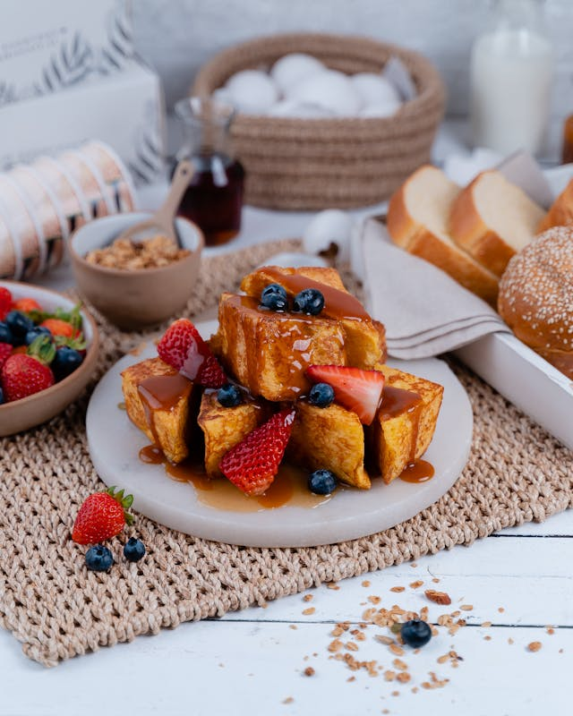

French Toast

Ingredients
- Toast
- Eggs
- Milk
- Cinnamon
- Butter
- Vanilla
- Syrup
Steps
-
Prepare the Egg Mixture:
In a bowl, whisk together 2 eggs, 1/2 cup of milk, a pinch of cinnamon, and a splash of vanilla extract.
Whisk vigorously to ensure the cinnamon is fully incorporated and doesn’t float on top.
-
Heat the Pan:
Melt 15g (1 tablespoon) of butter in a non-stick skillet over medium heat.
Make sure the pan is hot enough to sizzle slightly when the egg mixture is added.
-
Dip the Bread:
Quickly dunk a slice of bread into the egg mixture, coating both sides evenly.
Avoid soaking too long to prevent sogginess.
-
Cook the Toast:
Place the coated bread in the pan and cook for 2 ½ to 3 minutes on each side,
until the surface is golden brown and slightly crisp.
-
Repeat:
Add more butter to the pan as needed and cook the remaining slices in the same manner.
-
Serve:
Stack the toast slices, drizzle generously with maple syrup,
and optionally top with fresh or macerated strawberries for a sweet finish.
← Back to Home